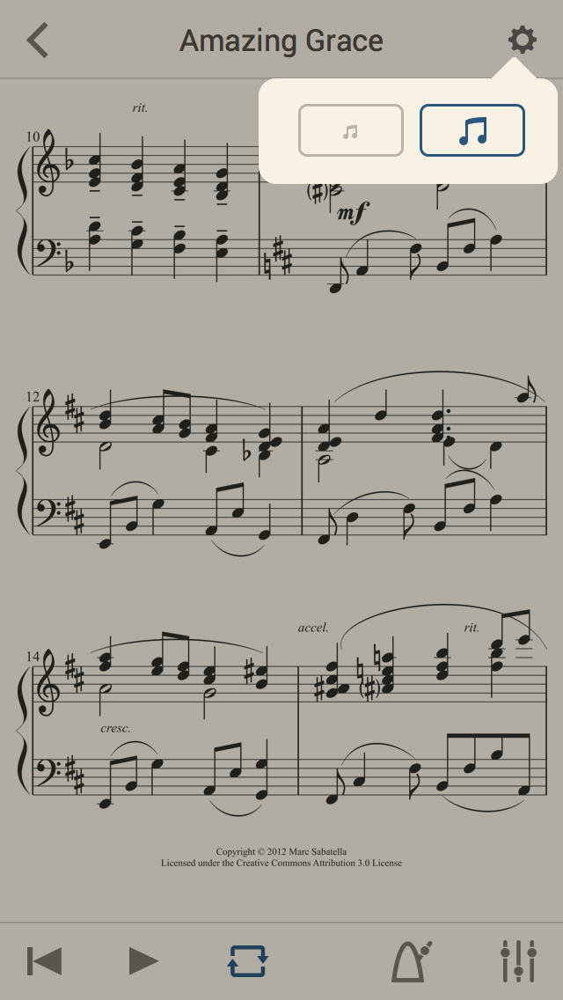
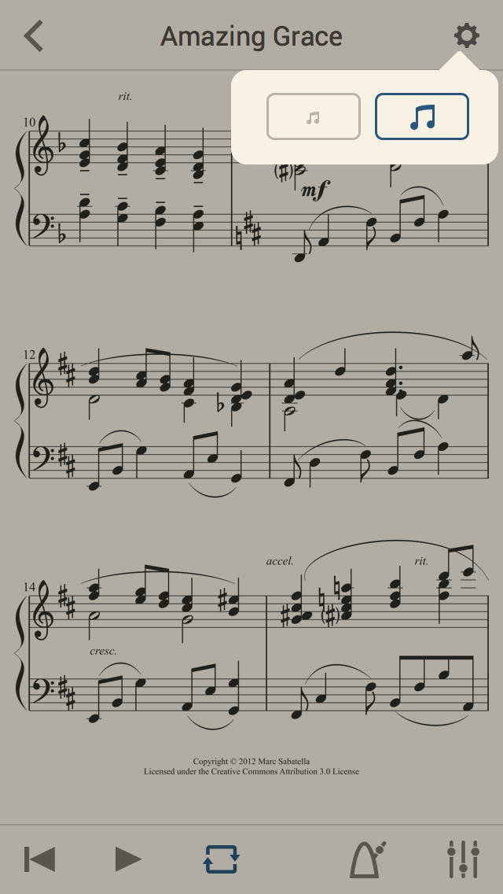

MuseScore
Partitions en tout genre
MuseScore
Editeur de partitions
- Gratuit et Libre
- Facile à utiliser
- 90% des fonctions des alternatives payantes (chères)
- De belles partitions
- Populaire, 10 million de téléchargements
MuseScore.com
- Des centaines de milliers de partitions
- Dans un format éditable!
- Mise en ligne par tout le monde
Applications mobiles
- Affiche et joue les partitions
- Changement de tempo
- Mixer, changer le volume des parties indépendamment
- Pour Android et iOS
- Gratuite ou payante

 
